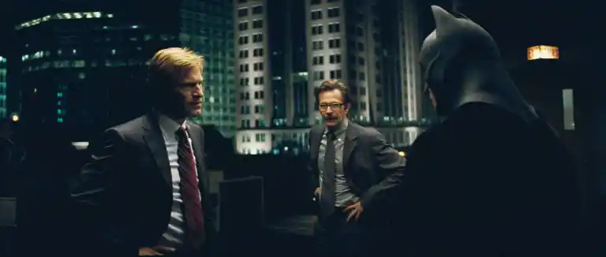
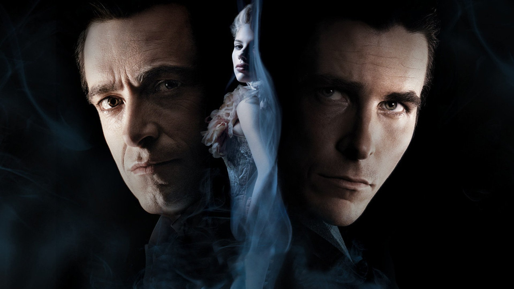
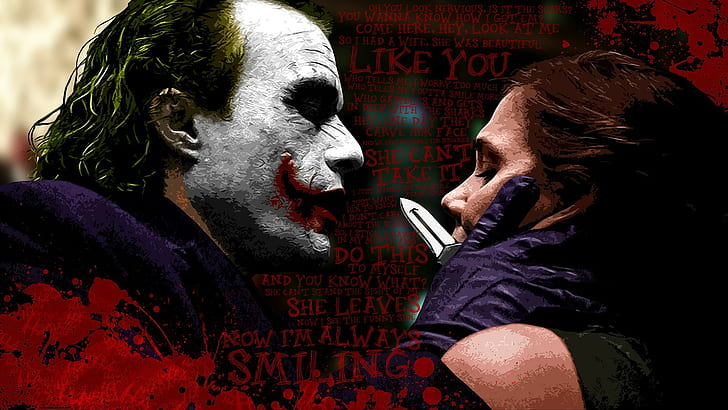
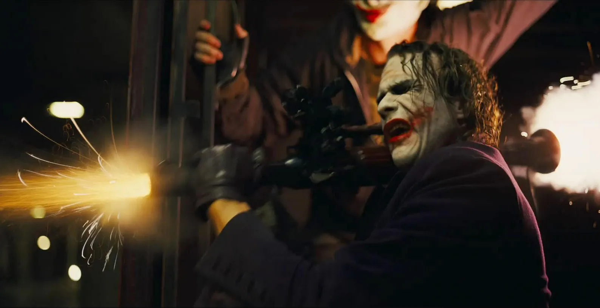
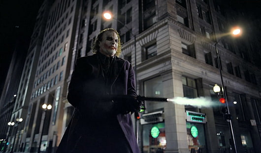
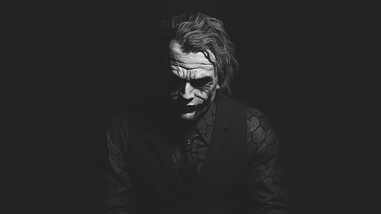

Quotes
View PhotosQuotes
It's not who I am underneath, but what I do that defines me.
重要なのは自分が何者なのかではなく自らの行動である
Why do we fall?
So we can learn to pick ourselves back up.
なぜ人は落ちるのか？
それは自分で立ち直ることを学ぶためだ。
You either die a hero or you live long enough to see yourself become the villain.
ヒーローとして死ぬか、生き延びて悪に染まった自分を見るかさ
 You see, madness, as you know, is like gravity.
You see, madness, as you know, is like gravity.
All it takes is a little push!
お前も知っての通り狂気は重力のようなもの。
人は一押しで落ちていく
 A hero can be anyone.
A hero can be anyone.
Even a man doing something as simple and reassuring as putting a coat around a little boy's shoulders
to let him know that the world hadn't ended.
ヒーローは誰でもなれる。簡単なことでいいんだ。
少年の肩にコートを掛け、世界は終わりじゃないと教えて安心させるようなことだ
Christopher Nolan
View PhotosChristopher Nolan's Movies
The Prestige
19世紀末のロンドン。
2人の天才マジシャン、ロバート・アンジャーとアルフレッド・ボーデンは、互いを尊敬しながらイリュージョンの腕を競い合っていた。
しかしそんなある日、アンジャーの妻が脱出マジックに失敗して命を落とす。
彼女の縄を縛ったのがボーデンだったことから、アンジャーはボーデンへの復讐を誓う。
 Inception
Inception
他人の夢からアイデアを盗み出す企業スパイ・コブは、その才能から国際指名手配を受け、さらに妻の殺害容疑もかけられていた。
そんなある日、サイトーと名乗る男が、彼に風変わりな依頼を持ちかける。
それは、コブが得意とするアイデアの盗み出しではなく、ターゲットの潜在意識にアイデアを植えつける「インセプション」というものだった。
 Interstellar
Interstellar
植物の激減と食糧難で滅亡の危機に瀕した人類は、居住可能な惑星を求めて宇宙の彼方に調査隊を送り込む。
クルーの1人として選ばれた男性は、もう会えないと泣きじゃくる娘に必ず戻ると約束して、過酷なミッションに挑む。
 Dunkirk
Dunkirk
イギリスとフランスの連合軍40万人が、ドイツ軍に追い詰められる。
やがて、英仏側は民間船の協力のもと決死の大救出作戦を決行。
若き兵士たちが生存をかけて戦う。
Tenet
ウクライナ・キエフのオペラハウスにてテロ事件が発生した。特殊部隊に偽装して突入したCIA工作員の男は、ロシア人たちに捕らえらてしまうが、やがて今回のテロと対処任務そのものがテストだったことが明かされる。
そして彼に課された使命は、時間移動が可能になった未来の世界から来た敵と闘い、第三次世界大戦の勃発を防ぐことだった。
Gallery
View PhotosGallery
 And here we go.
And here we go.
 You see, I'm a guy of simple taste.
You see, I'm a guy of simple taste.
I enjoy ah...dynamite...and gunpowder...and gasoline.
Ah, ah, ah, And you know the thing that they have in common?
They're cheap.
See, I'm not a monster.
I'm just ahead of the curve.
 I'm not a schemer.
I'm not a schemer.
I try to show the schemers how pathetic their attempts to control things really are.
 Now I see the funny side. Now I'm always smiling.
Now I see the funny side. Now I'm always smiling.
I believe whatever doesn't kill you simply makes you...
...stranger.
Introduce a little anarchy...
upset the established order...
and everything becomes chaos.
I'm an agent of chaos.
 See, madness, as you know...is like gravity.
See, madness, as you know...is like gravity.
All it takes is a little push.
Why so serious？